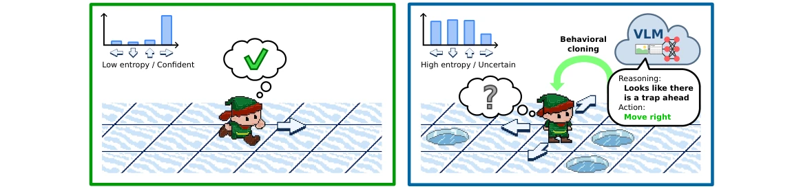
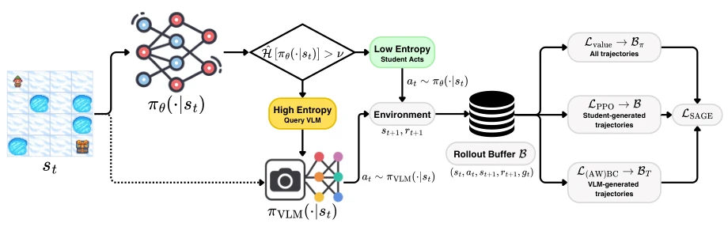
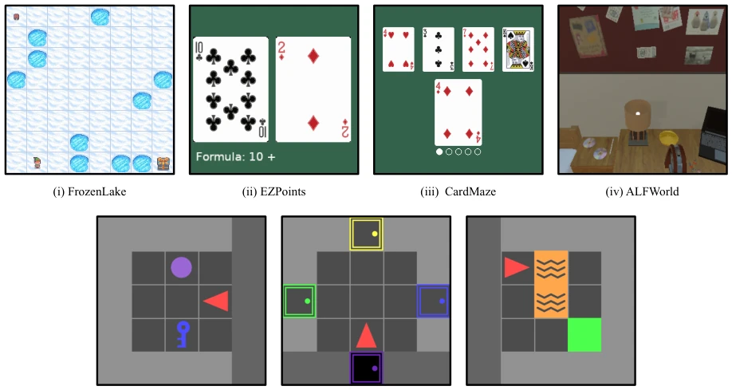
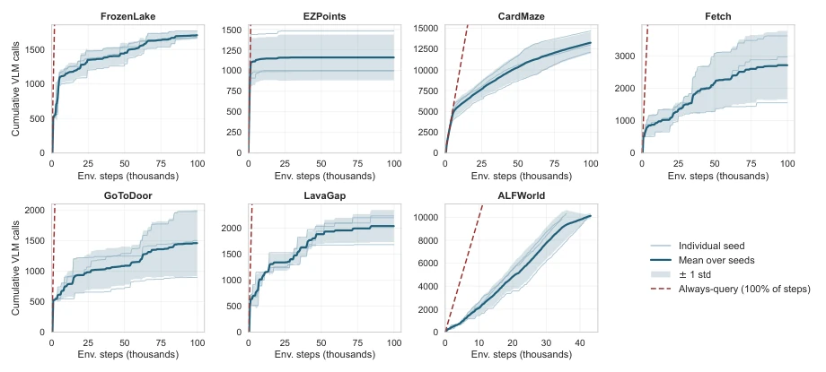

SAGE attempts to use VLM as a "temporary mentor" rather than a "permanent boss", which is a clever idea, after all VLM inference is expensive and prone to errors. However, using policy entropy to judge uncertainty is like using a thermometer to measure IQ, rough but effective. Experiments prove it can outperform pure RL in sparse reward tasks, even surpassing the VLM itself, which deserves praise. However, if the teacher itself is "flawed", the student cannot learn well, which the random teacher experiment exposed. Additionally, it only supports discrete actions, and applying it to continuous control still requires further refinement. Overall, it is a cost-saving RL acceleration scheme, but do not expect it to solve all hallucination problems, after all VLM "guidance" can also mislead the direction, and if the entropy threshold is tuned poorly, it easily leads to overfitting or under-exploration.
RL exploring sparse reward environments from scratch is extremely inefficient, while VLMs have prior knowledge, but using them directly as policies incurs high inference costs and cannot evolve through interaction (Ahn et al., 2022). Existing methods like DAgger (Ross et al., 2011) can learn online, but require querying experts at every step, deployment still relies on VLM, and cannot achieve full autonomy. Distillation methods like LVLM2P require VLM to output probability distributions, imposing a heavy generation burden. SAGE aims to resolve the contradiction of VLM being expensive and imperfect, allowing RL policies to internalize knowledge through selective guidance, finally running independently detached from VLM during evaluation.
The core of the SAGE framework is "on-demand guidance". During training, the agent monitors its own policy entropy, if exceeding the threshold it queries the VLM for an action, otherwise it decides autonomously. The data flow is divided into two parts: student-generated (Bπ) and teacher-guided (BT). The loss function is processed in partitions: PPO updates only on student data to guarantee the on-policy assumption; teacher data is distilled via Behavior Cloning (BC) or Advantage Weighted Behavior Cloning (AWBC). AWBC uses environment returns to calculate advantages, filtering low-quality teacher suggestions. The value function is trained in a mixed manner to utilize teacher-guided trajectories. This design both utilizes VLM's exploration guidance capability and avoids expensive calls at every step, finally obtaining a lightweight autonomous policy. Additionally, the system maintains a cache to reduce repeated queries, and in early training utilizes teacher guidance to help explore sparse rewards, while later stages mainly rely on the autonomous policy.

Figure 1: Dual architecture for RL. The agent is free to act in situations where it displays high confidence, but requests guidance from a VLM when it is uncertain, following the suggested action.

Figure 2: Overview of SAGE. At each training step, the student acts when its normalized policy entropy ˆH is below the threshold ν; otherwise, SAGE queries the frozen VLM teacher and executes its suggested action. Transitions are marked with gt and partitioned into student-generated Bπ and teacher-guided BT subsets. PPO updates the actor on Bπ, BC uses teacher actions from BT , and the value function is trained on the full buffer B.
Tested in 7 environments such as FrozenLake, MiniGrid, EZPoints, etc. Baselines include PPO, VLM-as-Policy, LVLM2P, DAgger. The metric is average peak episode return. Results show SAGE significantly outperforms PPO on sparse reward tasks like CardMaze, even surpassing the VLM teacher itself. VLM call rate dropped to 1.2%-13.3%, significantly saving costs. Ablation experiments show explicit BC distillation is crucial, performance collapses after removal; Advantage Weighted (AWBC) effect is not obvious. Long-horizon experiments prove guidance can change trajectory discovery rather than just accelerating convergence.

Figure 3: RL environments used in our experiments. (i) FrozenLake, (ii) EZPoints, (iii) CardMaze, (iv) ALFWorld, (v) MiniGrid Fetch, (vi) GoToDoor, and (vii) LavaGap.

Figure 4: Cumulative VLM-query budget over training. Each panel shows the cumulative number of VLM prompt calls issued by SAGE as a function of environment steps, for individual seeds and their mean ± one standard deviation. The dashed red line is the budget of an always-query approach (one call per environment step), for reference. Because queries are triggered only in high-entropy states, queries are concenrated at the beginning, and tend to reduce as the policy becomes confident.